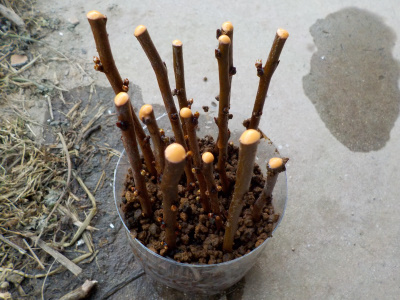
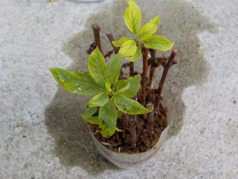
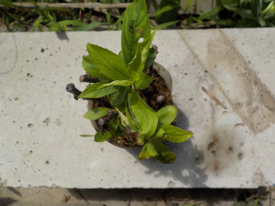
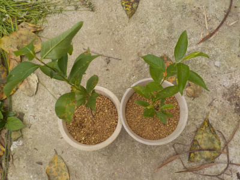
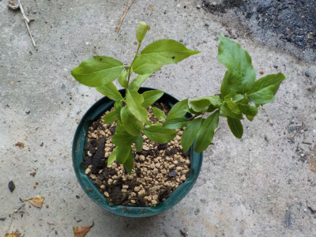

更新日 : 2020/02/23

剪定した枝を使って挿し木をしました。
結果は何か月後にわかるんでしょうね？
更新日 : 2020/06/07

数本に葉っぱが出ています。
なんか成功していそうな感じです。
更新日 : 2020/08/01

3本根っこがありました。
小さい鉢に移動して育てることにします。
今年は桃や梅を挿し木しましたが、成功するしないは害虫が発生するしないで決まるんじゃないかと思いました。
更新日 : 2020/10/04

今年挿し木したスモモですが、成長がとてもいいです。
今まで挿し木した中で一番早く成長しています。
更新日 : 2021/05/15

挿木に3本成功してて、2本は先に鉢を大きくしていましたが、残り1本も大きくなったので植替えしました。
成長が速いので、剪定して高さを抑えた方がいいかもしれません。
密閉挿しは有効かもしれないですね。